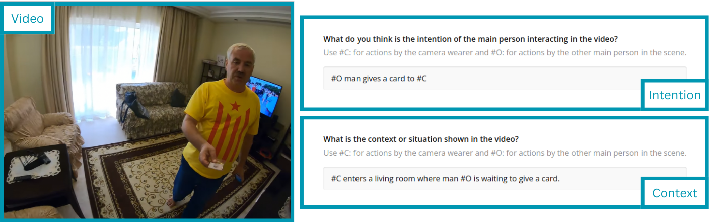
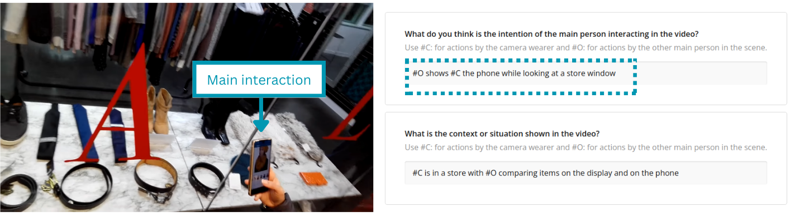

<!DOCTYPE html>
<html>
  <head>
    <title>Experiment</title>
    <script src="https://unpkg.com/jspsych@7.3.4"></script>
    <script src="https://unpkg.com/@jspsych/plugin-browser-check@2.1.0"></script>
    <script src="https://unpkg.com/@jspsych/plugin-preload@1.1.3"></script>
    <script src="https://unpkg.com/@jspsych/plugin-survey@2.0.0"></script>
    <script src="https://unpkg.com/@jspsych/plugin-survey-text@2.1.0"></script>
    <script src="https://unpkg.com/@jspsych/plugin-instructions@2.0.1"></script>
    <script src="https://unpkg.com/@jspsych/plugin-survey-html-form@2.1.0"></script>
    <link rel="stylesheet" href="https://unpkg.com/@jspsych/plugin-survey@2.0.0/css/survey.css">
    <link rel="stylesheet" href="https://unpkg.com/jspsych@7.3.4/css/jspsych.css"
    />
  </head>
  <body></body>
  <script>

    var jsPsych = initJsPsych({
      on_finish: function() {
        jsPsych.data.displayData();
    },
    });

    // ----->>>>> Copy code below this line to Cognition

    // var video_width =  256
    // var video_height = 256
    var required_flag = true

    var timeline = [];

    var window_size_test = {
      type: jsPsychBrowserCheck,
      minimum_width: 768,
      minimum_height: 768
    };
    timeline.push(window_size_test);

    // var preload = {
    //     type: jsPsychPreload,
    //     images: ['videos/components.png',
    //         'videos/icons_text.png',
    //         'videos/icons_symbol.png',
    //         // 'https://ronaldcumbal.github.io/open_repository/videos/test.png',
    //     ]
    // };
    // timeline.push(preload);

    /* ============================= Prolific ============================= */
    var prolific = {
      type: jsPsychSurveyText,
      preamble: '<h2>Welcome to the experiment!</h2><p>If you come from <strong>Prolific</strong>, please write your unique Prolific ID here.<br> Otherwise, continue to the next page.</p>',
      questions: [
        {prompt: 'Prolific Id:', 
        required: false,
        name: 'prolific_id'}
      ],
      data: {trial_name: 'prolific_id'},
    }
    timeline.push(prolific);

    /* ============================= Instructions ============================= */
    
    var intructions = {
    type: jsPsychInstructions,
    pages: [
      '<style>p {text-align: justify}</style>'+
      '<style>img {max-width: 100%; max-height: 100%;}</style>'+
      '<style>.textbox {width: 768px;}</style>'+
      '<div class="textbox">'+
      '<h3>Objective </h3>'+
      '<p>'+
      'The purpose of this study is to understand how people interpret human interactions. ' +
      'You will watch a series of short videos, each showing someone interacting with the person who recorded the video. ' +
      '<br>' +
      '<br>' +
      'Your task is to do two things for each video: ' +
      '<br>' +
      '1. Describe what you think the person’s intention is.' +
      '<br>' +
      '2. Provide a brief description of the context in which the interaction takes place.' +
      '</p>'+
      '</div>',

      '<style>p {text-align: justify}</style>'+
      '<style>img {max-width: 100%; max-height: 100%;}</style>'+
      '<style>.textbox {width: 840px;}</style>'+
      '<div class="textbox">'+
      '<h3>Descriptions </h3>'+
      '<p>'+
      'In your descriptions, please use the following labels: ' +
      '<br>' +
      '<br>' +
      '<strong>#C</strong>: when describing the camera wearer (person recording the video with a head-mounted camera)' +
      '<br>' +
      '<strong>#O</strong>: when describing actions performed by the other person of interest in the scene. ' +
      '<br>' +
      '<br>' +
      'Before starting, we’ll go through a few examples to help you get familiar with the task: ' +
      '</p>'+
      '</div>',


      '<style>p {text-align: justify}</style>'+
      '<style>img {max-width: 100%; max-height: 100%;}</style>'+
      '<style>.textbox {width: 768px;}</style>'+
      '<div class="textbox">'+
      '<h3>Example 1: </h3>'+
      '</img>'+
      '<p>'+
      ''+
      ''+
      '</p>'+
      '<p>'+
      'In this example, a single person is clearly visible on screen. '+
      'You can see that this person (#O) is handing a card to the camera wearer (#C). ' +
      'The context shows that they are playing a board game. ' +
      '</p>'+
      '</div>',

      '<style>p {text-align: justify}</style>'+
      '<style>img {max-width: 100%; max-height: 100%;}</style>'+
      '<style>.textbox {width: 768px;}</style>'+
      '<div class="textbox">'+
      '<h3>Example 2: </h3>'+
      '</img>'+
      '<p>'+
      ''+
      ''+
      '</p>'+
      '<p>'+
      'This one is a bit more complex, as multiple people are present. '+
      'In these cases, focus on the person looking directly at the camera. '+
      'Typically this is the person interacting with #C, and they’re usually the main focus around the middle of the video. '+
      '</p>'+
      '</div>',

      '<style>p {text-align: justify}</style>'+
      '<style>img {max-width: 100%; max-height: 100%;}</style>'+
      '<style>.textbox {width: 768px;}</style>'+
      '<div class="textbox">'+
      '<h3>Example 3: </h3>'+
      '</img>'+
      '<p>'+
      ''+
      ''+
      '</p>'+
      '<p>'+
      'This video is a bit tricky. '+
      'The person is barely visible, but you can still hear the interaction. '+
      'Even with limited visuals, you should try to infer the person’s intention and the overall context from the audio. '+
      ''+
      '</p>'+
      '</div>',


      '<style>p {text-align: justify}</style>'+
      '<style>img {max-width: 100%; max-height: 100%;}</style>'+
      '<style>.textbox {width: 768px;}</style>'+
      '<div class="textbox">'+
      '<h3>Example 4: </h3>'+
      '</img>'+
      '<p>'+
      ''+
      ''+
      '</p>'+
      '<p>'+
      'The quality of the video is low, making it harder to interpret. '+
      'As with the previous example, do your best to describe the interaction. '+
      "If you're unable to confidently determine the intention or context, select the UNSURE option. "+
      'You’ll then be asked to briefly explain why the video was unclear to you. ' +
      '</p>'+
      '</div>',

      "Let’s start with the taks."
      ],
        show_clickable_nav: true,
        allow_backward: false,
        button_label_next: 'Continue',
    }
    timeline.push(intructions);

    /* ============================= Task ============================= */

    var validation_videos = [
      // "val_01.mp4",
      // "val_02.mp4",
      // "val_03.mp4"
    ];

    var data_videos = [
      "videos/batch_0_test/168f91fd-53c2-4eee-9d2d-e25e1ad73438_17735.mp4",
      "videos/batch_0_test/3e92e0d2-2468-47f1-bbdf-1ebe1eb736c8_11796.mp4",
      "videos/batch_0_test/6c9d124f-2660-497d-8f5f-bf864de61f01_43.mp4",
      "videos/batch_0_test/6fd90f8d-7a4d-425d-a812-3268db0b0342_75495.mp4",
    ];

    // Insert validation videos at equally spaced locations
    var total_slots = data_videos.length + validation_videos.length;
    var interval = Math.floor(total_slots / validation_videos.length);
    var offset = Math.floor(interval / 2);

    for (var i = 0; i < validation_videos.length; i++) {
      var insertIndex = i * interval + offset;
      data_videos.splice(insertIndex, 0, validation_videos[i]);
    }

    for (var i = 0; i < data_videos.length; i++) {
      let videoFile = data_videos[i];  // Use let for block scope

      let annotation_trial = {
        type: jsPsychSurvey,
        survey_json: {
          showQuestionNumbers: false,
          completeText: 'Continue',
          elements: [
            {
              type: 'html',
              name: 'video_' + videoFile,
              title: 'Video Annotation',
              description: 'Please watch the entire video before answering the questions below.',
              html: "<video width='768px' height='512px' controls><source src='" + videoFile + "' type='video/mp4'></video>",
              startWithNewLine: false,
            },
            {
              type: "comment",
              name: "ans_intention",
              title: "What do you think is the intention of the main person interacting in the video?",
              description: "Use #C: for actions by the camera wearer and #O: for actions by the other main person in the scene.",
              rows: 1,
              autoGrow: true,
              allowResize: false, 
              data: {trial_name: 'ans_intention'}
            },
            {
              type: "comment",
              name: "ans_context",
              title: "What is the context or situation shown in the video?",
              description: "Use #C: for actions by the camera wearer and #O: for actions by the other main person in the scene.",
              rows: 1,
              autoGrow: true,
              allowResize: false, 
              data: {trial_name: 'ans_context'}
            },
            {
              type: "radiogroup",
              name: "ans_unsure",
              title: "Are you UNSURE about the video?",
              choices: ["Yes"],
              isRequired: false, 
              data: {trial_name: 'ans_unsure'}
            }
          ]
        }
      };

      // Conditional text area if UNSURE is selected
      let unsure_followup = {
        type: jsPsychSurvey,
        survey_json: {
          showQuestionNumbers: false,
          completeText: 'Continue',
          elements: [
            {
              type: "comment",
              name: "ans_unsure_explanation",
              title: "Please explain why you were unsure about the video.",
              rows: 5,
              autoGrow: true,
              allowResize: true
            }
          ]
        },
        conditional_function: function() {
          let last_response = jsPsych.data.get().last(1).values()[0];
          return last_response.response.unsure === "UNSURE";
        }
      };

      timeline.push(annotation_trial, unsure_followup);
    }


    /* ============================= End ============================= */
    // Exit Survey
    // Note: This survey comes after the last task with important data for my study and provides some buffer time
    // at the end of the experiment for the data to finish uploading to the server.

    var exit_survey = {
      type: jsPsychSurveyHtmlForm,
      button_label: 'Continue',
      html: 
          '<style>p {text-align:left; spellcheck=false;} input[type="text"] {width:8ch;} fieldset {border:1px solid #999;box-shadow:2px 2px 5px #999;} legend {background:#fff;text-align:left;font-size:110%;}</style>'+
          '<span style="font-size:125%; font-weight:bold;">Exit Survey</span>'+
          '<p>Would you be interested in doing similar tasks in the future?</p>'+
          '<p style="text-align:left;"><textarea name="feedback" rows="3" style="width:90%;" required></textarea></p>'+
          '<p>If you have any comments, please write them here.</p>'+
          '<p style="text-align:left;"><textarea name="comments" rows="3" style="width:90%;"></textarea></p>'+
          '',
      data: {trial_name: 'exit_survey'},
    };
    timeline.push(exit_survey);

    jsPsych.run(timeline);

    // ----->>>>> Copy code above this line to Cognition

</script>
</html>